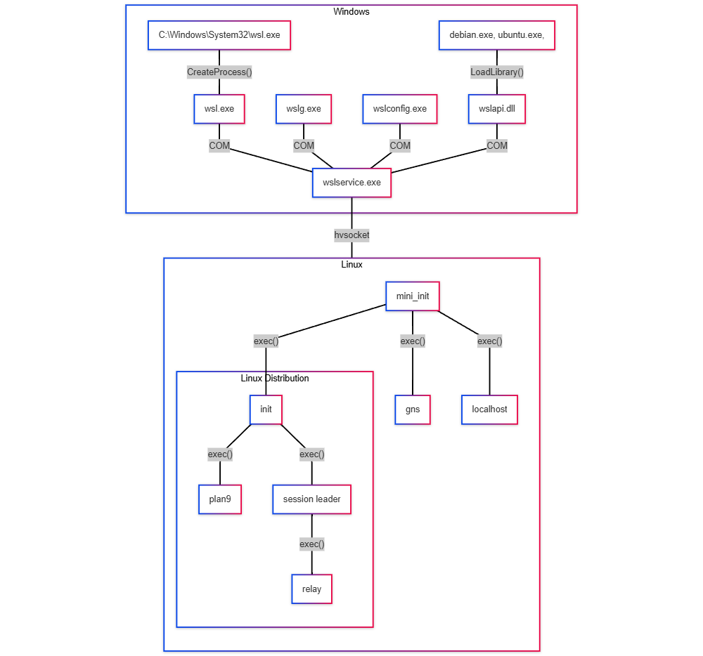
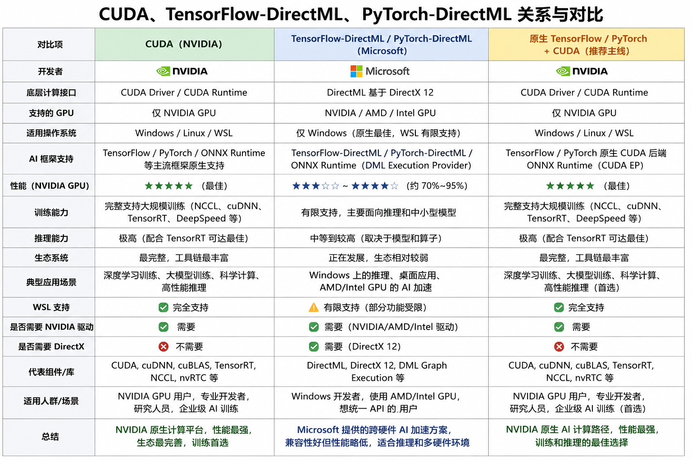
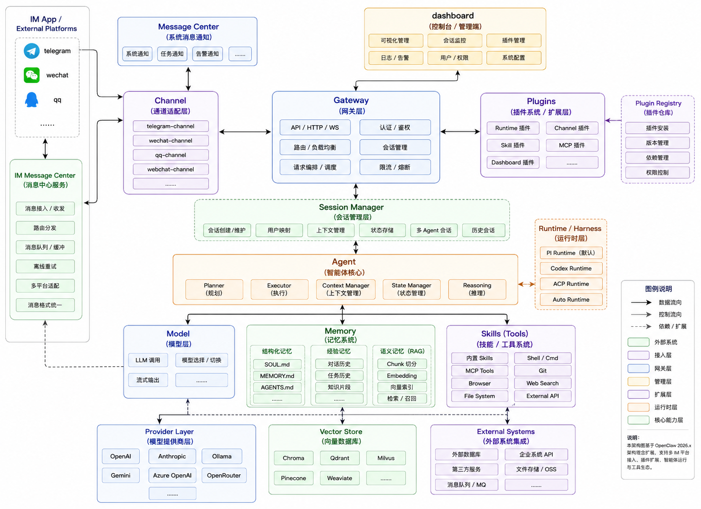

前言
WSL，全称Windows Subsystem for Linux。是一个让开发者无需使用传统虚拟机或者安装双操作系统，在Windows操作系统上使用Linux能力的子系统。推荐使用WSL2。Windows版本要求如下
旧版 WSL 的手动安装步骤 | Microsoft Learn
安装WSL2需要在Windows开启两个功能：
虚拟机平台”（Hyper-V子集）
适用于 Linux 的 Windows 子系统
具体安装步骤可以参照上述官方文档地址或者直接问大模型，这里不再赘述。
架构
WSL历经两个版本迭代，当前生产推荐使用WSL2，WSL2相较于WSL1，具备完整的Linux内核和系统调用，在跨操作系统文件系统访问逊于WSL1。

GPU
WSL支持使用GPU加速，以Nvidia为例。只需要在Windows宿主机上安装显卡的驱动，WSL会在Linux操作系统模拟为NVIDIA GPU 驱动程序libcuda.so，因此用户不需要再在WSL安装GPU驱动，只安装相关的CUDA工具包即可使用。
CUDA on WSL User Guide — CUDA on WSL 13.3 documentation

应用场景
近期在WSL2上部署了KubeEdge的边缘端，并启用了GPU加速来部署推理服务，满足边缘场景下应用的部署和管理。
KubeEdge
KubeEdge在接入Windows主机时，为统一部署包的操作系统架构，简化开发和运维的工作，决定采用在Windows上安装WSL2，部署Linux组件的方式，来避开Windows的兼容性问题。
边缘端
在Windows宿主机上添加如下配置，并重启WSL。
Advanced settings configuration in WSL | Microsoft Learn
1 | # C:\Users\<用户名>\.wslconfig |
Mirrored网络对于Linux Iptables的兼容性较差，不建议使用。
2
3
4
5
6
7
8
9
[wsl2]
#使用宿主机网络，默认是NAT网络
networkingMode=mirrored
#使用宿主机DNS解析
dnsTunneling=true
# 重启WSL
wsl --shutdown
在WSL中添加如下配置，并重启WSL
1 | # /etc/wsl.conf |
安装Nvidia-Container-Toolkit，并设置为containerd的默认运行时。在WSL中无需再次安装Nvidia的驱动。
1 | nvidia-ctk --runtime configure --runtime=containerd --set-as-default |
注意根据操作系统的cgroup版本，分别设置Containerd和EdgeCore的配置。
查看操作系统cgroup版本命令： stat -fc %T /sys/fs/cgroup/
tmpfs cgroup v1 代表是cgroup v1，/etc/kubeedge/config/edgecore.yaml 设置modules.edged.tailoredKubeletConfig.cgroupDriver=cgroupfs
/etc/containerd/config.toml和/etc/containerd/conf.d/99-nvidia.toml 设置 SystemdCgroup=false
cgroup2fs cgroup v2 代表是cgroup v2，
/etc/kubeedge/config/edgecore.yaml 设置modules.edged.tailoredKubeletConfig.cgroupDriver=systemd
/etc/containerd/config.toml和/etc/containerd/conf.d/99-nvidia.toml 设置 SystemdCgroup=true
云端
云端部署在一个K8s的集群中，因此要借助于K8s的能力，进行GPU的资源分配。可以关注GitHub - NVIDIA/gpu-operator项目，这里因为与KubeEdge的兼容性问题，而且实际使用WSL中，用户会在宿主机预安装Nvidia驱动，因此选择使用了其中的子项目GitHub - NVIDIA/k8s-device-plugin
Node-Feature-Discovery
自动发现节点硬件和系统特征（CPU、PCI设备、网卡、内核能力等），并为 Node 添加对应 Label，供 Kubernetes 调度和资源管理使用。
GPU-Feature-Discovery
自动发现 NVIDIA GPU 的型号、数量、MIG 能力、CUDA 驱动版本等 GPU 特征，并为 Node 添加 GPU 相关 Label，供 GPU 工作负载调度使用。
Navidia-Device-Plugin
向 Kubernetes 注册 GPU 资源（如
nvidia.com/gpu），负责 GPU 资源分配、MIG 资源暴露及 Time-Slicing 等 GPU 共享能力，使 Pod 能够申请和使用 GPU。-
相较于上一带NVML（NVIDIA Management Library），DCGM（Data Center GPU Manager）统一了大部分主流显卡的监控指标。
OpenClaw
前言
当前正处于 AI 应用落地的快速迭代期。大量新事物层出不穷：从 MCP、A2A 到 SSE Streaming、Computer Use；AI 应用开发也从高代码的 LangGraph、LangChain、CrewAI，逐渐延伸到低代码的 Dify、Coze、N8N。大量智能体不断涌现，Manus、OpenClaw、Hermes；AI 编程工具也层出不穷，从 Cursor到 OpenCode、Claude Code、Codex等。新的框架、协议、工程范式与大模型几乎每天都在更新。
对于长期奋战在一线、又不想被时代淘汰的工程落地人来说，这种高速变化难免令人感到迷茫。很多今天还没来得及深入理解的东西，明天可能就已经被新的概念覆盖。
然而我始终认为，真正能够进入生产环境稳定运行、真正实现业务价值、真正经得起投入产出衡量的东西，最终才会沉淀下来成为精华，其余的大多不过是阶段性的浪潮，经不起时间的检验。
裹足不前，固然会被时代抛下；但也没必要迷失在大量营销、弄虚作假与贩卖焦虑的软文之中。保持学习，保持观察，也始终关注内心的成长。耳听八方，静观其变，inner peace。
因此，出于对智能体的好奇，我使用了一台即将被淘汰的 Win10 电脑，以极低的时间和经济成本，开始了自己的 AI Agent 折腾之旅。
架构

环境
OpenClaw早期的版本对于Windows的支持并不是很好，而且我的老旧电脑Windows版本较低，为了避免无谓的折腾，选在了在Windows上安装WSL2，然后在WSL2中安装OpenClaw。安装脚本不再赘述。
Taiscale
为实现远程访问，安装Tailscale，将手机、WSL2、笔记本等组成一个内部的局域网。通过在Windows配置转发规则和放通防火墙，实现远程登录WSL2和OpenClaw的dashboard访问。
1 | # 1.Windows防火墙放通OpenClaw Gateway的访问端口18789 和WSL sshd 22端口 |
模型
当前使用的主力模型是DeepSeek-V4，量大管饱，性价比优越。另外可以搭配免费账号chatGPT，偶尔可以薅一下羊毛。